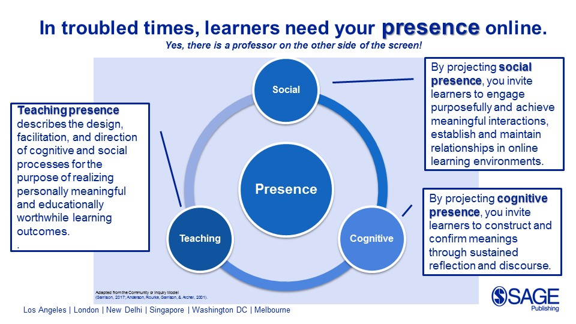

As shown in the homepage tab, our main focus for this research based assignment is to research and develop a better understanding on how online learning can affect us students in different ways. The main sub-categories for this which were obvious to us were the advantages online learning. How it can affect us positively and the different ways it can help us learn.
We will also research on the disadvantages of online learning, which can be disadvantages directly
related to but not limited to the quality of learning students are able to get, the concerns
of mental stress online learning may cause to students.
Another topic we were also interested in was the different choices schools have made in regards to online learning. Especially since the Covid-19 pandemic, schools were forced to partake in the virtual way of teaching students, and it would have been extremely challenging for schools to keep everything online and manage the quality of their teachings to a high standard. We chose this as our sub-topic as ww were interested in how different schools have manages online learning throughout the pandemic, and whether students have been satisfied with the quality of learning they were getting while staying virtual.
